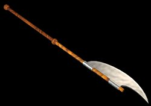

A character in the
Trassgar Saga.
Webdate: 2000.08.24
The Cock and Bottle Tavern was not exactly the seediest tavern in town. But it worked for him. To an outsider, the diminutive Hairfoot blended indistinguishably with the riffraff of Forest's Edge that frequented the inn. Reclining his rickety chair against a shadowy corner, he swiveled his empty flagon in circles on the unsteady table in front of him using dust-crusted feet. "What corner doesn't suck light in here?" he mused, trying in vain to lift his own spirits since the mead certainly had not.
"Tomorrow I'm gonna get myself outta this rut," the young thief had promised himself weeks ago in a nearby town, one day before a drunken dwarf felt him pilfering some coins. The blasted sot had whipped out a battle axe and had nearly demolished the Crazy Wyvern in blind rage. Luckily he had not been identified.
With no lineage as reference, the thief had failed to convince a single guild to take a chance on him. He instead relied on risky alliances with outlawed rogue bands here and there to provide him meager income as he moved from town to town, back in his old habits, trying to outrun a past that had changed forever two years ago. He knew he was burning his rope at both ends, and almost looked forward to some grizzly end. Cursed halfling luck!
"I gotta get a real job," he now said, fingering his silent belt pouch. On a good day, it would clink happily with gold and electrum. Today he just felt its sole occupant: a walnut-sized green gem. "Insurance," he lied to himself.
That gem had earned the rogue his nickname, but it also served to remind him of failure---a split-second decision that had cost the lives of the first real friends he'd ever known. His refusal to sell his gem was a self-imposed penance. He had never even had it appraised, for he feared that knowledge of its worth would weaken his resolve. "It's likely fake," he mumbled darkly, lost in self-pity....
"HEY, NEWT! YER IN MY SEAT!" Thick words spoken from a thicker half-orc jolted the thief back to reality. "AND GIT YOUR BALD FEET OFFA MY TABLE, YOU SCRUFFY-LOOKING NERFHERDER!"
The inn's usual din damped at the ruffian's inflammatory bellowing. "He's a black-sasher!" someone squelched, before joining the exodus out the door. A few hardened regulars maintained their seats, and flexed their knotted knuckles, which snapped and popped like sap on a fire. The crusty bartender Hap, a brawny, leathery human with oily black hair combed into twin ponytails, was silently sliding scarred, iron-reinforced wooden doors across the renowned ale cases behind the bar. There was going to be a brawl, whatever the thief's response. "Better make this one memorable," the thief thought.
"Who're ya callin' scruffy-looking, droolface?" the thief spoke calmly to the half-orc's face, trying not to imagine what a nerfherder could be.
Droolface's response was almost predictable. [Droolface: lvl 3 fighter, Str 15, THAC0 17, AC 8 (leather)] The thief easily dodged the classic right fist [Droolface Needs 13 (THAC0 - Tilder's AC). Attack Roll=6] but the second left hook was an orcish innovation he'd not yet experienced. The agile thief got clipped in the shoulder [AR=13, Dmg=1], and spun out of his chair onto the floor, but was on his feet in seconds [Dex check: 14].
The halfling thought, "Gotta remember that one!" as he happily scurried clockwise around his antagonist's legs, causing the creature to flail around and shift his weight just so.... "There's a good half-orc!" And with a precisely placed body check [tumbling roll for unarmed combat: 18. Now to attack, Tilder needs 11, AR=14 +2 (for tumbling success) =16], Droolface toppled to the ground, cleaving the rickety table in two.
The bar exploded in mayhem at the half-orc's crash, and the nimble thief made his way to the door, hiding in shifting shadows and tumbling across the floor. He even had time to pick a few pockets in the chaos. [pick pockets: 42%, 30%, 30%, 30%: 3 Successes and 1 Failure, but the Failure was too busy happily wringing his neighbor's neck to notice that an attempt had been made on his belongings; Tilder collects 32 silver and 1 gold.] Finally the door was in view as the halfling deftly slid to the lee side of an upturned table.
With a swish, a portly dwarf sailed over the table just shy of the door and slammed unconscious onto the wood-planked floor, causing dust to puff upward in parallel billows through the wooden slats below the thief. He couldn't wait for the dust to settle, for his cover had just been blown. Amid shouts of "GIT THE SCRAWNY HALF-FRY!" and "TAKE THAT, MOOSE AND SQUIRREL!" he leap-frogged over the prone chunk of dwarf, and triumphantly sailed through the dusty air.
Right into the calloused hands of Hap! "Gotcha, ya little nit!" Hap smirked. The thief tried to shake free, but Hap's grip only tightened. Before the thief could insult him, Hap shook his captive upside down until enough coins fell to cover the damages. "AN' IF I EVER SEE YA HERE AGAIN, I'LL PAINT DA WALLS WIT' YER BLOODY CARCASS!" That said, Hap hurled the halfling far into the street, methodically picked up his coins, and re-entered the maelstrom to bash a few skulls.
"Didn't like the mead there anyway," the thief thought in mid-air as he prepared himself for a tumble.
"Errgh!" the thief gasped, as he professionally rolled to a stop on the far side of the road [tumbling roll=6]. Back: check. Ribs: check. Shoulders: sore. Limbs: check. He'd survive, he thought, as he rifled through his clothes to see if Hap had collected all of his recent pilferings. "Fewmets!" Broke again. As if on cue, his stomach grumbled. He felt his belt pouch. The curse was still there. "Great. Just when my mood was improving," he muttered as the moonlight abruptly grew dim.
Not a cloud. A shadow. "Not my day, is it?" he gulped.
The halfling whipped around and faced a small group of tall and well-armed strangers approaching him in the street, steel weapons glinting with lunar hue. It was too late to scurry into a shadow; they were upon him. "Outta the pan and into the fire!" he thought, wiping his brow on his tattered sleeve in defeat. He didn't even bother to draw his short sword as he stood up to face them.
"Well I'll be a goblin's uncle! Good eve' Tilder!"
"Well, you do know us, you little runt, you spent three weeks in our jail! Never have we boarded a more rowdy and annoying inmate!" came the reply from one of the other humans.
"Can this get any worse?" Tilder asked himself. It did. The men, whom he now vaguely remembered as a part of the town guard, began to fan out in front of him. One of them strapped on a pair of metal knuckles. The one who had initially addressed him spoke again.
"Now, now, fellas, let's not give this guy a rough time just yet. There are strict guidelines and clearly defined procedures for dealing with prisoners. But then, you knew that didn't you, weasel? You knew the rules so well that you decided to have a discussion with the boss about them. What did you think, halfling? Did you really think you'd get off that easily?" he sneered.
"You made it easy, you greasy ex-jailer! Get fired from any other jobs lately?" he said, slowly backing up and drawing his short sword. Tilder had barely had time to catch his breath from the last altercation, and here he had found himself in the midst of another. As he backed away, the former guards stepped forward menacingly. At that moment, he saw something, or rather, someone, enter his peripheral vision on his left. "Great. Surrounded. I wonder if historians will call this 'Tilder's Last Stand'."
The veteran dwarven warrior Gnash, and his equally inebriated elven companion, Amber, watched with interest the confrontation before them. When the halfling drew his sword and the humans who outnumbered the poor fellow five-to-one advanced threateningly, Gnash and Amber looked at one another and sighed. They were in need of a good night's sleep, but the lone halfling was in need of allies. They paused, carefully considering at what moment to involve themselves in the conflict.
Tilder squinted defiantly at the ex-guards in front of him. They were snickering, cracking their knuckles, flexing their muscles, and cursing him.
"Hey Tilder, why don't you come and clean my teeth with your toothpick you're holding there!" one of them jeered.
A second laughed mockingly and torted, "Ah ha! The hairy rodent is scared! Look at him, Leeden, he's trembling with fear! Or maybe it's excitement, eh? Maybe he's looking forward to another beating, only this time, there won't be any jail master to break up the party!"
Tilder tried to block out the insults. He gripped the stock of his sword, and decided to stand his ground. He'd put up a good fight, and maybe even get rid of his curse the hard way.
[Intiative: Tilder=3, Humans=1] The leader, the one that had been called Leeden, took the initiative and swiftly kicked out with his right leg toward Tilder. It was a well-placed kick, and it might have connected with Tilder's head had it not prematurely connected with something else. Something that had blurred in front of him with the alacrity of an arrow fired from a crossbow. Something short, stocky, fairly drunk, and weighing two hundred and forty pounds (not including armor).
Gnash gripped Leeden's leg, pressed his thumbs into the human's kneecap and declared, trying hard not to betray his intoxication, "Why don't you pick on somebody your own size, ya stinky rotten slimeball scum of the forest?!" With that, the best insult he and Amber could come up with in a moment's notice, he pinched hard with his thumbs, sending what he hoped would be excrutiating jolts of pain up and down the man's leg. Leeden buckled, and fell to the ground.
"ARGH! Let go of me you freakin' midget!" Leeden cried. His comrades, surprised at the speedy arrival of the dwarf in full battle-armor, halted their advance, uncertain. It was one thing to beat up on a halfling. But this dwarf had bloodlust in his eyes (actually, his eyes were bloodshot from drinking too much) and if the rumors were true about the Krom battlerager dwarves, this guy could do them some major damage. But still, it was five against two. "Help me you idiots!" Leeden cried. One of the guards moved forward to Gnash, and brandished his steel-armored fists.
Out from the shadows stepped a slender elf, hands expertly clasped around the jeweled hilt of a long sword. She smiled. Her smile was not a friendly, "Hi, nice to meet you" smile. "Can I help you, sir?" she said to the human who'd come to Leeden's aid.
Five against three. The bully guards balked.
The dwarf tightened his grip much to Leeden's dismay. The elf turned her sword, and the light of the stars glinted off it.
Tilder swallowed in disbelief. Complete strangers, coming to his aid? Most unexpected, this was!
[Houston, we have a stand-off! Combat means time for another initiative roll. Low die wins. There are other ways, of course, to continue this confrontation...]
In the wan light of the gibbous moons, Tilder could hardly resolve the faces of the timely newcomers. The dwarf had a menacing helmet which mostly obscured his face; at one point, his heart skipped a thump or two when he thought he recognized the she-elf. But memories of his past were a dangerous distraction now, especially those that were synonymous with failure, and he pushed them back into the mental closet from which they'd sprung. Against his gut instinct, he decided the intentions of his would-be rescuers were indeed genuine, if only for the moment.
The tension of the situation flowed with a viscosity akin to Hap's famous Mystery Brewe ("Good for what ales ya, runt!"). The she-elf shifted her weight fluidly and scanned the ex-jailers for any hint of threatening movement. The dwarf held his grip and his woolly mustache twitched with an ever-widening grin. Leeden allowed a long-needed swallow before he spoke.
"Uh, take yer stinkin'..."
"Look sleazeball, you're lucky my buddy Nash hasn't yet pinched your girlie leg off like a grasshopper's. Speaking of which, how fast have you been clocked doing that, eh Nash?"
Either the dwarf's helmet blocked his ears, or he was too intent on intimidating Leeden with his bloodshot stare [Wis check: 17; needed 8 or less. Duh!]: it looked like Tilder's bluff was going to fall harder than ol' Droolface had. An eternity's span of heartbeats followed. Then Amber turned to Tilder.
"You know, I think he's pinched one off well before a standard hourglass' time, but that was with two hands.... Say Gnash, you could speed things up a bit, eh? Use two hands, you crazy lout." Amber turned toward Metal-Knuckles, whose eyes and mouth were as wide open as a fish out of water. She addressed him with candor, "He really is more efficient than this---don't let word get out, you hear?"
At Amber's words, Metal-Knuckles leapt like a spawning salmon and bolted up the stream, er, street. His three companions balked as they alternatingly tracked the screaming man and their writhing leader.
Before they could react, the Dwarf plunged his polearm's stock into the mud with a menacing flourish. "Broad's always right," Gnash mischievously smirked and began to use both hands on Leeden's purple knee.
Leeden's pent-up pain exploded in whimpering pleas of mercy that eventually sent his fellow ex-jailers scattering as they one by one decided to head for more hospitable surroundings. [Morale checks, base is 50%, die roll of base or below is good morale. Each guard checks at +10% since leader is incapacitated, and +15% for each friend deserting: 99+10=109. Run away! 68+25=93. Run away! 44+40=84. Run away! 39+55=94. Run away! 77+70=147. Run WAY away!].
Tilder lifted a surprised brow at the eccentric duo's contributions to his bluff. "Looks like a lucky humor still courses through my veins!" He sauntered up to the dwarf, who held the writhing Leeden in check.
He waited until his former tormentor turned his rage-filled, rubicund face downward. "Finish him."
Gnash looked in disbelief at the audacity of the halfling, but his attention soon turned to his captive. The image of a maimed grasshopper was just too much for the greasy ex-jailer [Con (=15) check for horrible thought: 17 fail!], and as the blood drained from his face, Tilder thought he detected humiliation in Leeden's facial twitches. With the ensuing thud, the confrontation had ended, and Gnash reclaimed his bardiche with a grunt: "Wimp." 
Polearm in hand, Gnash turned, staggering, to address the halfling, but couldn't find him. He did an awkward 360-degree pan of the scene, ending up at his elven companion, to whom he shot a confused expression. Amber, standing comfortably akimbo, merely gestured toward the portly dwarf's feet.
A halfling was efficiently looting Leeden.
"Hidee-ho there rapscallion... oh,
Tilder looked up embarrassed, then grinned sheepishly.
"Yes, a lowly thief's instincts, that's what. Pardon me good sir, and ma'am. I am indebted to you. It's not
much [44 sp, 8 gp], but, here." Ashamed at appearing ungrateful, the Hairfoot lowered his gaze and offered Leeden's coinbag.
Amber approached, ushering the dwarf and Tilder into the shadows. "Let's find a less conspicuous place
for introductions, shall we? Besides, the guards may re...." Amber was alarmed at the halfling's sudden
stare, barely visible as they entered a copse of evergreens. What's with this tunic? she thought, as
she drew her hand up to her neck to pull her cape closed. Noting Amber's discomfort, Gnash peered
down at the thief half-threateningly, half-inquiringly. But Tilder remained fixed, staring
through the she-elf's brooch.
The sigil of the Third House! If she recognizes me, I'm history! Tilder panicked internally, reliving
a disaster two years passed. In the shadows, Amber even looked like Amalthea. The door to his mental closet
flew wide open now, and memories gushed forth with painful alacrity. No! I've gotta come clean!
Gravity tugged on his belt pouch.
But it was the she-elf poking him. She had stooped down and was peering at Tilder's far-off expression;
the dwarf was close behind, equally curious. Slowly, Tilder's eyes refocused.
"Sorry, m'lady...." And the diminutive thief snapped to attention. "My name is Tilder, but you may know
me as Whisperfoot."
Amber's head slightly cocked to the left, but her expression betrayed no recognition. The halfling's face
suddenly blanched. By the Light of Lothlorien! She doesn't
know the nickname they gave me!
Did not one of them escape? Tilder was stunned.
His worst fears now confirmed, he fought to maintain his balance as clouds passed overhead, turning the
night as black as he now feared his soul must be.
[Con check due to massive emotional
overload (Con halved): 9 doesn't beat a 15/2]
He fainted at the puzzled elf's feet.
Stor and Olen's room was a complete mess. Beer-sheba had taken several spans to clear a space
on the other bed (it must have been Olen's by the look of the odd spell components) without making
too much noise to wake her current charge. Now she lay on her side on the bed reading a musty tome
of Trassgarian history that Clive had lent her. Occasionally she peered at the mysterious creature that
Gnash had deposited on the other bed, like the spoils of some ancient dwarven conquest. The halfling was
having frequent fits in his sleep, and his small legs jittered like those of a slumbering dog dreaming of
chasing a rabbit. "Poor soul. I wonder who's got him on the run?"
But Tilder's pursuer came naught from Trassgar, nor from any of the worlds with gates to the war-scarred planet. And his
pursuer had finally caught him. In a feverish state, Tilder was prisoner to a relentless replay of terrifying memories....
Rowend finally returned. "It appears they've settled down for another round o' drinks. Evidently,
slaughtering innocent monks 'n' looting their temple's hard work. If only we'd discovered these sashers
sooner. Blasted orcs!" He carelessly unstrapped the twin hand crossbows from his wrists and crouched
down to the others' level.
"But Row, our mission is strictly nonconfr..."
"Yeah, yeah, we know, Elly. We coulda evened the odds. Your combat-illusions alone woulda made the
diff." It was unlike Rowend to snap at his new mate, and Tilder and Amalthea stiffened visibly at the
tension. The illusionist looked down at her spell components, which she'd been sorting. "Sorry guys. Hey,
Elly, I'm sorry." The two exchanged knowing glances. Hearing the orcs brag about their crimes against the
helpless elves had taken an immense emotional toll on the scout party. "OK, let's talk strat. 'Thea, what
you think?"
"There's nothing we can do but wait and listen. Perhaps they will discuss plans before they slumber. Our
position is secure and downwind; they will never notice us, that is, unless Tilder sneezes again." The halfling
looked around the trio of grave elven countenances, and wondered if she really meant it. All at once, they
broke out in a smattering of grins, and the ranger jabbed him playfully in the side. (Ouch!) "Say, this is a
good time to show us your stuff, Tilder. Go steal that gem Bork was bragging about--you know, the green
one he pried from the monks' temple brazier? And tell us if you hear anything juicy."
"I uh...." This was unexpected. But it was no joke; Rowend nodded his consent. Tilder really hadn't
been much use since he'd joined THoR. It was high time he started earning his pay. Amalthea had pulled
a few strings to get him the job after she'd caught him stealing some rations out of Third House Recon's
hidden stores. (He had immediately surrendered the goods, but she'd been so impressed he'd even
found the place that she'd sponsored him for the position to complete their team. On the
strength of the veteran ranger's enthusiastic recommendations, he'd won the spot hands down. Score
another lucky break for Mr. Halfling!) His side began to hurt with anticipation.
Tilder stammered some more, then the illusionist helped: "Bork's the really smelly orc on the far left, near
the mul-pine. Walk with a whisper, Hairfoot!"
"Uh, thanks Ellendale. Don't worry, I know how to handle orcs." And with that, Tilder got up quickly and
made for the black-sashers' camp....
The smaller moon had not reached its zenith before the halfling suddenly bolted upright in his bed, looked around the unfamiliar settings, and saw Beer-sheba
cautiously peering at him over the pages of a thick tome. He immediately groped at his belt.
"You won't find your blades, thief. I took the liberty of putting them safely over here. But you're not our
prisoner, OK?" That hadn't come out quite the way she'd wanted it. But the thief looked relieved, and
mumbled something that sounded like "still there--just a ... dream." He was still fumbling at his side.
"Oh, no miss, I wasn't looking for my sword.... Aha! I must have been sleeping on this."
Tilder hefted the little pouch from underneath his belt, flipped it up in the air, watched it twirl
barycentrically, and caught it deftly between his hairy, mud-caked feet.
[Dex (=19): 2 "gotcha!"] "Not very comfy!"
"Sorry, I uh, ... Amber and Gnash told me to look after you and said something about you having some
explaining to do?" Beer-sheba sat up and closed her book. "But if you want to go back to sleep and talk about it in the morn, when they're both much more
agreeable.... Oh, my name's Beer-sheba."
"I'm Tilder. Thank you for your hospitality, miss. Your friends saved me from a most unpleasant situation
out there, and I'm very grateful." The thief yawned capaciously.
"What I have to say has been waiting to be said for two years now, so I guess it can wait for the morrow." And the diminutive rogue fluffed his pillow gently, slid the pouch underneath, turned his back to the young cleric, and lay down.
The halfling's mysterious words had piqued Beer-sheba's attention. Was he bluffing? "Uh, I'll listen if you want to talk?"
"I know... where... Klaxton's hiding...." The alarmed cleric waited for him to finish, but the next sound she registered in the night's silence was the thief's eager snores.
Tilder's adventures continue in
The Vortex Quest pages.
5
Tilder gets carried away in Amber's
page, move 6
6/24/98
6
6/28/98